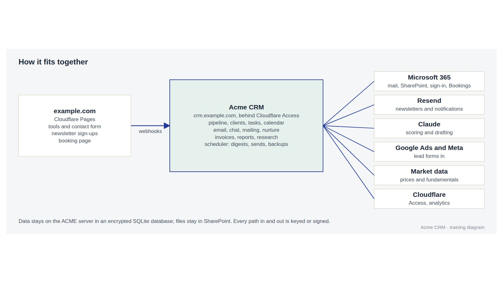
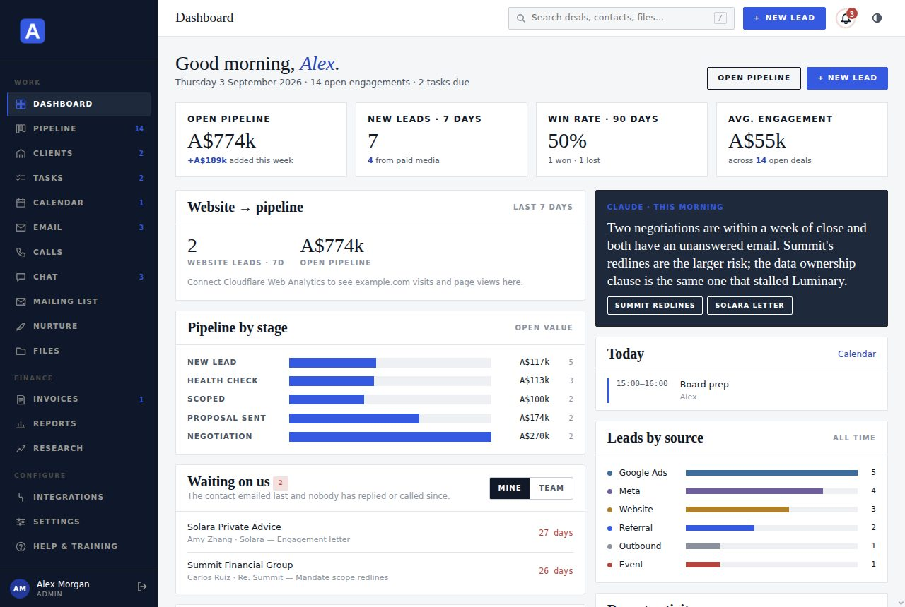
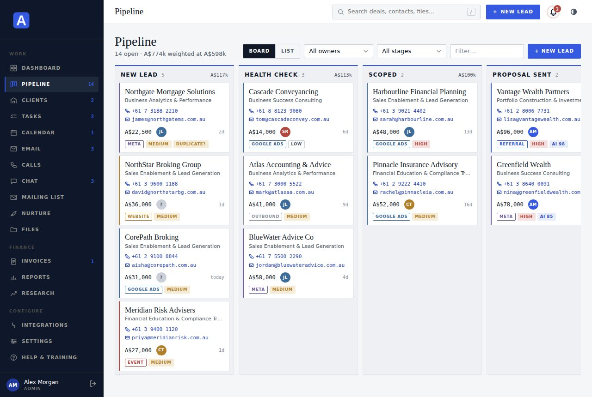
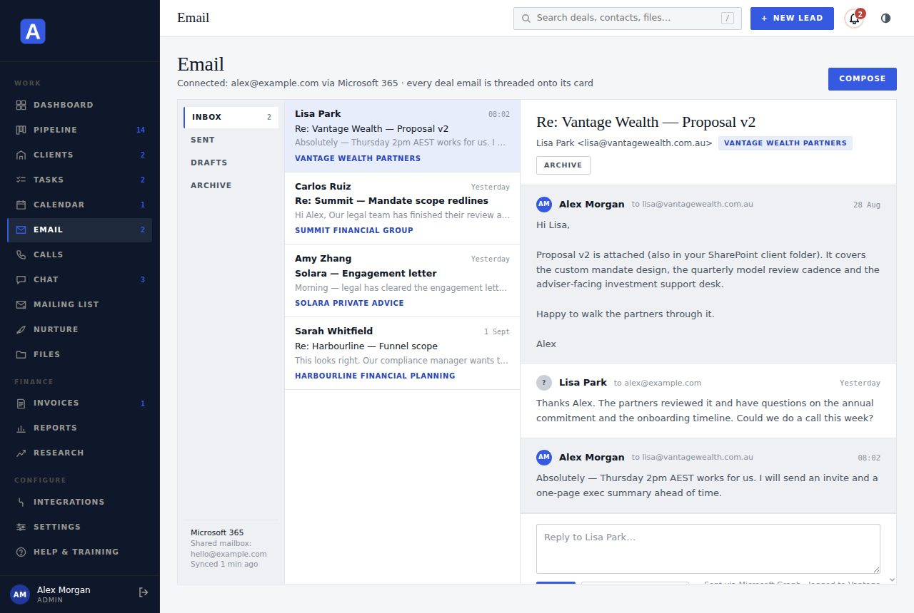
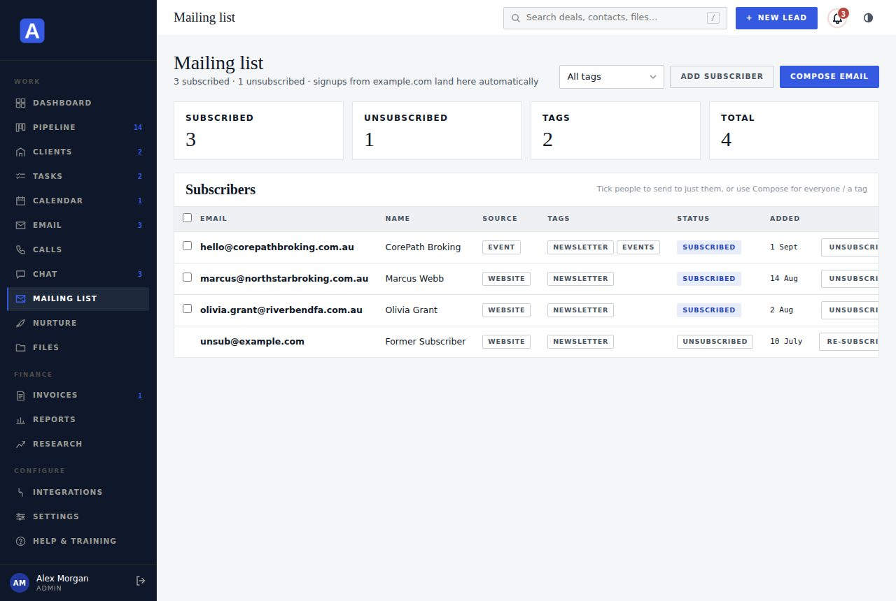
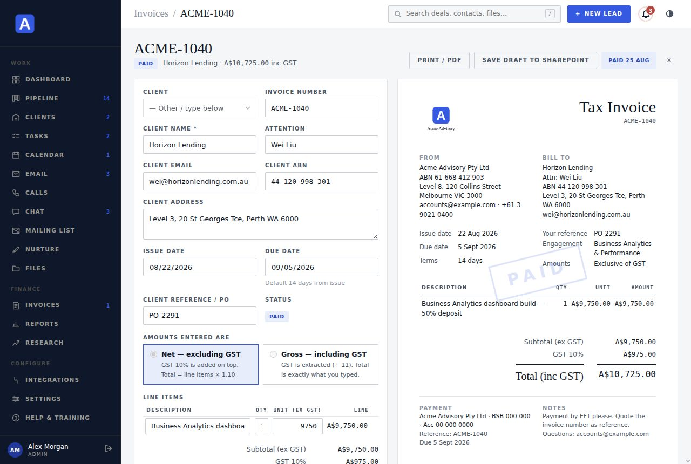
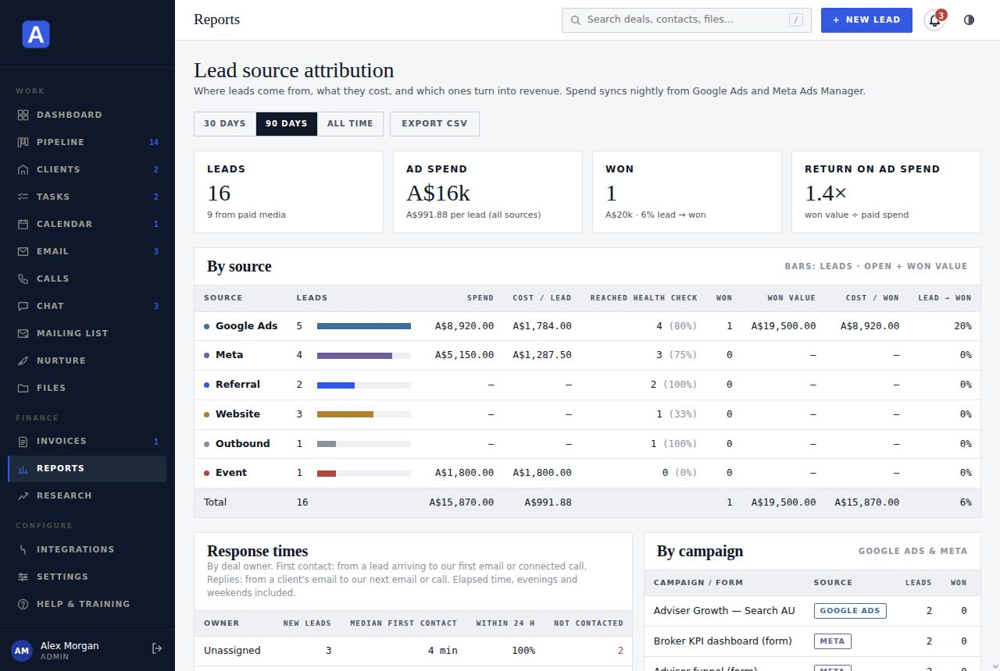
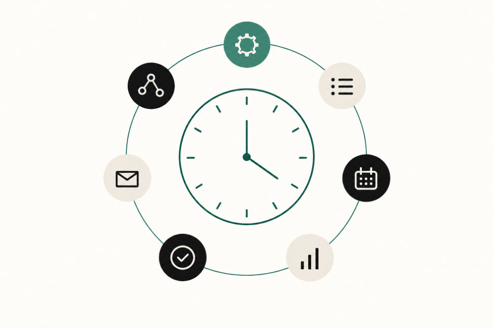
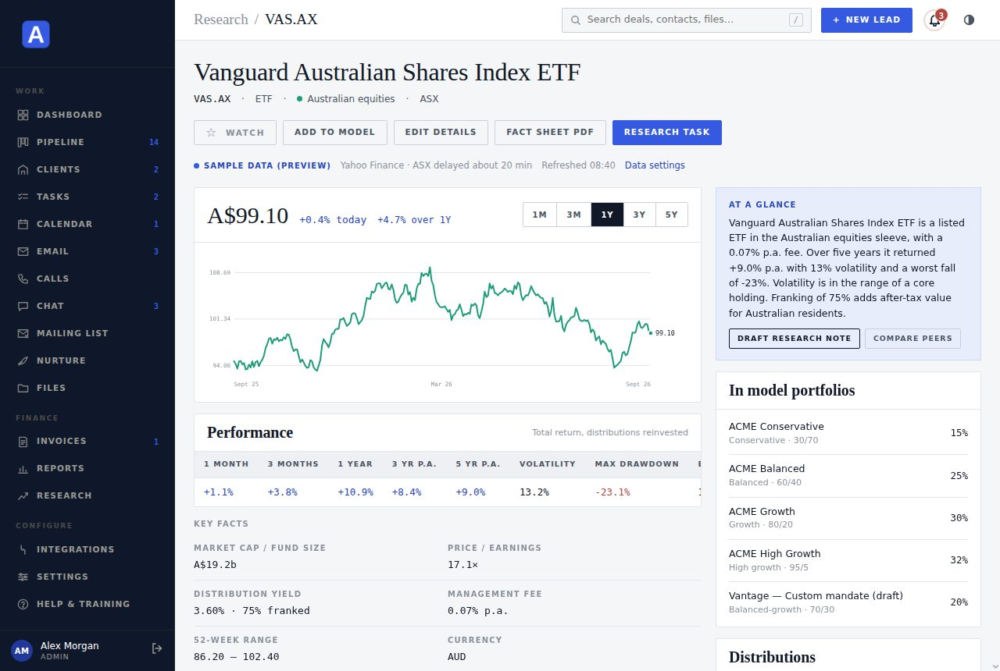

Brightday
Pipeline system map
What the CRM does, how the website feeds it, which outside services it leans on, and roughly what it all costs to run each month. Parked and planned work is in the future capabilities statement.
How it fits together
Website in, pipeline out

The website's own capabilities
brightday.com.au is a lead engine, not a brochure
Every page is prerendered for search and shares a sitemap. Thirteen free tools give visitors a result in minutes and give you a qualified lead with the answers attached.
Diagnostics
Business Health Check
Two-minute scorecard across six performance areas, with anonymous benchmarks once 25 responses exist.
Diagnostics
AI Readiness Assessment
How ready the business is to adopt AI, and where to start.
Diagnostics
Will AI Actually Help?
Six questions between a business and an honest answer.
Calculators
Capacity and Profit
How much revenue is already sitting in the building.
Calculators
Pipeline Gap
How many leads a revenue target actually needs.
Calculators
Unit Economics
Whether growth is actually profitable, in a minute.
Planning
KPI Starter Kit
The six numbers a business should watch.
Planning
Marketing Rhythm Planner
A marketing plan sized to the hours available.
Planning
Positioning Statement Builder
One clear, repeatable sentence about what the business does.
Operations
Automation Opportunity Finder
Which hours a team could stop doing by hand.
People
Workplace Financial Wellbeing Check
How well a workplace supports people with money.
People
Team Capability Check
Eight questions on onboarding, CPD, compliance and knowledge capture.
AI
Prompt Optimizer
Research-backed prompts tailored to each AI model.
Pages
- Services, Diagnostic, Leadership, Approach, Education, Tools and Insights, Case studies, Contact, Book
- Articles with structured data for search
- Privacy policy and AFSL disclaimer on every page
Under the hood
- React on Cloudflare Pages, 59 routes prerendered, sitemap generated at build; repo trimmed of unshipped media and one-off tooling
- Two Pages Functions: lead capture and health-check benchmarks
- D1 database keeps every submission with the full answers
Brand
- Approved logo in dark and light versions, animated brand film
- Ubuntu and Manrope, BD palette
- Open Graph image and icons generated from the logo master
Website to CRM
Every enquiry lands in the pipeline
All 13 interactive tools (Business Health Check, Capacity and Profit Calculator, Pipeline Gap Calculator, AI Readiness Assessment, KPI Starter Kit, Positioning Statement Builder, and the rest) plus the contact form post to a Cloudflare Function. It logs the submission to D1, emails you and the visitor through Resend, then creates a lead in the CRM with the tool results attached. Duplicates on the same email, domain or practice are flagged rather than doubled up.
The footer form calls the CRM's subscribe hook. Single-click by default: the address goes straight onto the mailing list and gets the welcome email. Double opt-in can be switched on with one setting.
The /book page embeds Microsoft Bookings. Every booked call syncs into the CRM within 15 minutes as an activity and a task on the matching lead, or as a new lead. A booked call also stops any nurture sequence for that person.
New leads are scored by Claude within about five minutes and enrolled in the matching nurture sequence. Follow-ups go out in Melbourne business hours, each with a booking link, and stop the moment the lead replies, books, moves stage or opts out.
Unsubscribe, subscription confirmation and nurture opt-out pages are served by the CRM without a login. Email templates load the approved logo from brightday.com.au, since the CRM itself sits behind Cloudflare Access.
The CRM dashboard shows brightday.com.au visits and page views from Cloudflare Web Analytics next to leads and pipeline value, so "website to pipeline" is one glance.
Inside the CRM
Sixteen workspaces, one database
Everything below is one app and one encrypted SQLite file. Each workspace reads and writes the same records, so a lead that arrives from the website is the same object a task, an email thread and an invoice attach to.

Work
Dashboard
- Waiting on us: every open deal where the client emailed last and nobody has answered, for you or the team
- Open pipeline value and new leads by week
- Website to pipeline tile with traffic trend
- Tasks due, calendar, unread chat
Work
Pipeline
- Closed deals archive after 90 days: summaries sync, full history loads when opened, nothing deleted
- Kanban by stage with drag to move; call or email the contact straight from the card
- Lead detail: activity log, notes, files, emails
- Claude score, priority and rationale on each lead
- Duplicate detection on email, domain and practice
Work
Clients
- Client records with engagements and contacts
- SharePoint folder per client, created on demand
- Invoices and files in one place
Work
Tasks and calendar
- Assign, complete, due dates, reminders
- Daily digest of due and overdue items
- Shared calendar synced both ways with each person's Outlook; invites by email
Work
- Each user connects their Microsoft 365 inbox
- Read, reply, archive, delete, search, attachments
- Every email with a lead, sent or received, threaded on the deal card with reply from the card; the owner is alerted when a contact replies
- Claude drafts replies; remote images blocked by default
Work
Chat
- Rooms and direct messages between staff, live within a second on every open device
- @mentions and direct messages notify by push or email
- Edit, recall or delete your own messages
- Unread digest after 24 hours away
Marketing
Mailing list
- Subscribers, status, bounces and complaints
- Branded newsletter builder with Claude drafting
- Preview, send-me-a-test, then send to a segment
- Sends run in the background with progress, cancel, retry and a report
- One-click unsubscribe headers on every send
Marketing
Nurture
- Sequences per service and source, four steps over 14 days
- Auto-enrol new leads, backfill older ones
- Sends in business hours from your mailbox or the campaign address
- Stops on reply, booking, stage change or opt-out
Finance
Invoices
- Tax invoices with GST, line items, terms
- PDF saved to SharePoint, emailed with one click
- Draft, sent, paid and overdue states
Finance
Reports
- Response times per owner: first contact on new leads and replies to client emails, with the share inside 24 hours
- Pipeline by stage, source and owner
- Conversion and value over time
- CSV export
Finance
Files
- Client library on SharePoint, browsed from the CRM
- Upload, download, reconcile folders
- Email attachments filed straight to a client
Finance
Research
- Research library of ASX, US and global securities with live prices, five years of history, distributions and fees; starter library, the ASX 20 or ASX 50 in one click, or any list of ASX codes (such as the ASX 200) uploaded as a CSV
- Model portfolios with returns, risk and growth of $100 from real month-end prices against a benchmark ETF
- Fees, ratings and three-year risk for about 8,200 ETFs and managed funds from Morningstar exports kept in SharePoint; unlisted funds found by APIR code
- Claude research notes and peer comparison; notes signed off by a second person and reviewed yearly, with review tasks
- Branded fact sheet PDFs per security and client pack PDFs per model, with live charts, saved to SharePoint
Configure
Integrations
- Status of every connection, test buttons
- API keys with scopes for external agents
- Run any background job on demand
Configure
Settings and team
- Users, five access levels with a per-function matrix and per-person overrides, invites, 2FA reset
- Notification preferences per event
- Claude triggers, booking link, brand details
Configure
Security
- Two-factor with backup codes, device list
- Audit log with two-year retention and export
- Sign out other devices
Anywhere
Installed app
- Installs to phone, tablet and desktop
- Works offline for the shell, keeps you signed in
- Push alerts for new leads, tasks, mentions and direct messages
Anywhere
Help & training
- A training module for every section, with screenshots and diagrams
- What's new: a log of every change to the CRM
- This capabilities statement, stored in the app and updated with it






Screenshots are from the demo workspace that ships with the build, so names and figures are sample data.
Integrations
Outside services and what each one does
| Service | Used for | Status |
|---|---|---|
| Cloudflare Pages | Hosts brightday.com.au, runs the lead and benchmark functions, stores submissions in D1 | live |
| Cloudflare proxy and Zero Trust | Sits in front of portal.brightday.com.au; staff sign in with Microsoft before the CRM is even reached; public email links bypass | live |
| Cloudflare Web Analytics | Site traffic on the CRM dashboard | optional |
| Microsoft Entra ID | Single sign-on to the CRM and to Cloudflare Access; MFA and conditional access apply | live |
| Microsoft 365 mail (Graph) | Per-user connected inboxes, sending as the user, calendar invites | live |
| SharePoint | Client file library, invoice PDFs, nightly database backup copy | live |
| Microsoft Bookings | Public booking page; booked calls sync to leads every 15 minutes | live |
| Resend | Transactional mail from brightday.com.au and campaign mail from news.brightday.com.au; bounce and complaint webhook | live |
| Softphone: JustCall (or Dialpad, Aircall) | Calls and texts posted by webhook: recording, transcript, AI summary, comments, link back to Aircall; matched to deals by phone number; click-to-call numbers | ready, needs an account |
| Other email providers | None in the code. Postmark, SMTP and Graph send were removed in September 2026 to run lean; they sit in git history if Resend ever has to be replaced | removed |
| Google Ads lead forms | Webhook straight into the pipeline | when campaigns run |
| Meta Lead Ads | Facebook and Instagram instant forms into the pipeline | when campaigns run |
| Claude | Lead scoring, reply drafts, newsletter and nurture drafting, research notes | live |
| Yahoo Finance | Prices, history, distributions and profiles for Research, refreshed on a schedule | live |
| Web push (VAPID) | Phone and desktop alerts, no third party involved | live |
| Google Postmaster, DMARC | Deliverability monitoring for both sending domains | live |
| REST API with scoped keys | Zapier, agents or scripts can create and update leads | live |
Runs on its own
Background jobs
A scheduler inside the server ticks every minute. No host cron, no third-party automation service. Any job can also be run on demand from Integrations.

Claude scores unscored leads and writes the rationale to the activity log.
Sends due sequence steps in Melbourne business hours.
Pulls new appointments into leads and tasks.
Emails anyone with messages unread for over 24 hours.
Updates watched securities.
Checks GitHub and puts merged changes live, with a one-line rollback.
Due and overdue tasks to each owner.
SQLite snapshot to the VPS and a copy to SharePoint; sessions and old audit rows pruned.
Security
What protects the data

Perimeter
- Cloudflare proxy, origin certificate, staff-only Access with Microsoft login
- Rate limits, CSP, HSTS, fail2ban and unattended upgrades on the VPS
Accounts
- Entra single sign-on or password plus TOTP two-factor
- Access levels decide which sections each person gets and whether they see everyone's records or only their own; the server enforces both
- Device list, sign out elsewhere, invite and reset links
Data
- Every record sealed with AES-256-GCM before it touches disk; versioned keys, rotation tool
- Mailbox tokens stored encrypted server-side only
- Two-year audit trail, nightly backups, restore steps documented
Scale model
Twenty users and 1,000 new leads a month
Assumes 1,000 leads a month split roughly Google Ads 40%, Meta 40%, website 20% (about 33 a day, peaks near 100), 20 staff of whom 5 are admins, four-step nurture on every lead, and a mailing list that grows by about 5,000 a year. Every cap below is read from the code, not estimated.
Load against the built-in limits
| Function | Load at 1,000 leads a month | Cap in the code today | Used |
|---|---|---|---|
| Lead intake (webhooks and website) | 33 a day, peaks of 100 | 40 hook calls a minute per source IP, 600 API calls a minute | under 5% |
| Claude scoring | 33 a day | 3 leads every 5 minutes, 864 a day | 4% |
| Nurture sends | 4,000 a month, about 135 a day | 30 every 10 minutes in business hours, about 1,600 a day | 8% |
| Live updates | 20 users, one open event stream each plus a fallback sync every minute: 20 requests a minute, and a pull only when something changed | 600 a minute per office IP | 4% |
| Bookings sync | 96 Graph calls a day | Graph allows thousands per 10 minutes | under 1% |
| Database | 12,000 leads and about 50,000 activities a year, under 100 MB | SQLite comfortably handles millions of rows at this write rate | low |
| Newsletter to the whole list | 10,000 recipients by year one | Queued on the server and sent in the background at 2 a second (Resend's limit), resuming after a restart; 10,000 recipients in about 85 minutes | fits |
| Admin browser load | Admins receive every record: 12,000 leads a year, roughly 60 MB of JSON | Members only receive their own deals, so they are fine; admins on phones will feel it after about 4,000 leads | over by month 5 |
Email volume a month
| Stream | Basis | Emails |
|---|---|---|
| Nurture | 1,000 leads, four steps, about a third stop early after a reply or booking | 3,000 |
| New-lead alerts | Owner plus admins only; the "any new lead" alert no longer reaches the whole team | 1,000 |
| Task, chat and calendar notices | 20 users, working days | 1,500 |
| Newsletter | Monthly issue to a list that reaches 10,000 in year one | 5,000 to 10,000 |
| Invoices, confirmations, resets | Low volume | 300 |
| Total | Resend Pro covers 50,000 a month | 11,000 to 16,000 |
Monthly cost at this scale
| Item | Basis | A$ / month |
|---|---|---|
| VPS | Move to 4 vCPU, 8 GB for headroom on PDF rendering, scoring and backups | 40 to 70 |
| Cloudflare | Zero Trust stays free to 50 users; Pages, D1 and Web Analytics stay within free tiers at this volume | 0 |
| Resend | Pro tier, 50,000 emails a month, about US$20 | 30 |
| Claude | 1,000 scores plus drafts on Sonnet 5 through the API at US$2 in and US$10 out per million tokens is about US$10; on the subscription helper it is A$0 but shares your personal rate limit | 0 to 20 |
| Microsoft 365, 20 seats | Business Basic about A$10 or Business Standard about A$21 a seat; you would carry these for Outlook and Teams regardless of the CRM | 200 to 420 |
| Google Ads and Meta connections | Free. Media spend to generate 800 paid leads a month at a typical A$40 to A$120 cost per lead is A$32,000 to A$96,000 and sits in the marketing budget | 0 |
| System total | Excluding the Microsoft seats you already pay for and excluding ad spend | about 70 to 120 |
| Per user, all in | Including Microsoft seats | about 14 to 27 |
For comparison, a hosted CRM with the same automation (sequences, scoring, mailing, booking sync) typically lists at A$75 to A$150 a seat a month at this tier, so 20 seats would be A$1,500 to A$3,000 before email and AI add-ons.
What has to change before you get there
Done · September 2026
Lead routing
Every lead now gets an owner the moment it arrives: a default of round-robin across a pool, one fixed owner, or unassigned, plus rules matched on source and service line under Settings, Lead routing. The "any new lead" alert goes to admins only; the owner gets their own. Leads added by hand without an owner are routed the same way.
Done · September 2026
Background bulk sender
Newsletter sends are queued in the database and worked through by the scheduler at two a second, resuming after a restart without sending anyone twice. The Mailing view shows progress, lets you cancel or retry failures, and keeps a per-send report; the sender is notified when it finishes. The old 350-recipient ceiling is gone.
Shipped · 28 September 2026
Archive closed leads
Won and lost deals closed for more than 90 days sync as short summaries; their history loads from the server when the deal is opened. The period is set under Settings, Stages. Nothing is deleted.
By month 4
Roles and reporting
Add a team lead role that sees a team's deals without full admin rights, per-user targets, and first-response time on the reports page. Two to three days.
When convenient
Claude on an API key
Point scoring and drafting at the API with Sonnet 5 so it no longer shares your personal subscription limit. Half a day, roughly US$10 a month.
When convenient
Monitoring
Uptime check on the health endpoint, error alerts from the container log, and a weekly deliverability read-out from Postmaster and the bounce webhook. Half a day.
What does not need to change: SQLite (fine to well over 100,000 leads at this write rate), the single VPS, Cloudflare Access, Bookings sync, the scoring and nurture schedulers, or the website functions. Duplicate detection already ignores Gmail, Outlook and other free-mail domains, so Meta leads will not be flagged against each other.
Rough running cost
What it costs each month today
Estimates in Australian dollars at current list prices. Most of the stack sits on free tiers or inside licences you already pay for. Check against your invoices before quoting these to anyone.
| Item | Basis | A$ / month |
|---|---|---|
| VPS (CRM container, Caddy, backups) | Shared with the other BD services already on it; a 2 vCPU, 4 GB box is plenty | 15 to 40 |
| Cloudflare: DNS, Pages, Zero Trust, D1, Web Analytics | Free plan; Zero Trust free up to 50 users; D1 free tier far above current volume | 0 |
| Domains: brightday.com.au, news.brightday.com.au | One registration, subdomain is free; about A$20 a year | 2 |
| Resend | Free up to 3,000 emails a month; the next tier is about US$20 (A$30) for 50,000 | 0 to 30 |
| Microsoft 365 (Entra, Outlook, SharePoint, Bookings, Graph) | Included in the Business licences the team already holds; no add-on required | 0 extra |
| Claude scoring and drafting | Runs through the Claude subscription helper on the VPS, so no separate API bill; on the API it would be a few dollars a month at current lead volume | 0 to 10 |
| Google Ads and Meta lead webhooks | The connections are free; ad spend is a marketing budget item, not a system cost | 0 |
| Yahoo Finance, Postmaster Tools, web push | No charge | 0 |
| Softphone with recording and transcription (when adopted) | JustCall Team at US$29 a user a month on annual billing, two-seat minimum, unlimited AI transcription, Australian numbers included; Dialpad Pro is the runner-up at about US$25; Aircall starts at US$30 with a three-seat minimum plus an AI add-on | about 90 per seat pair |
| Typical total | Everything above at today's volumes | about 20 to 80 |
No per-seat CRM licence. Adding a staff member costs nothing beyond their Microsoft 365 licence, and the whole stack runs without any subscription that scales with contacts or emails until the mailing list passes roughly 3,000 sends a month.